那珂湊・潮見写真館殺人事件
古い写真館で、店主が死んだ。第一発見者は、新米刑事・風見莉々香の姉。捜査から外された莉々香から、あなたにロックのかかった資料が届く。

全11章（プロローグ＋S1〜S9＋大謎）・遊ぶ時間のめやす 約3時間20分（謎解きに慣れた人で2時間半〜3時間）。途中に動画パートと、暗室のミニゲームがあります。各章の謎は、資料を自分で読み解いて最後に1回で答える形です。途中でやめても自動で保存され、続きから遊べます。スマホを縦に持って、片手で遊べます。
暴力・死・家族の秘密の描写があります。大きな音や急な画像はありません。写真・素材のクレジット